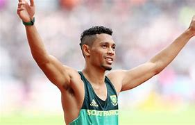
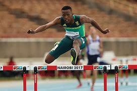
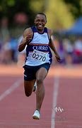

Team SA


Akani Simbine, born 21 September 1993, is the South African record holder in the 100m with a time of 9.84 set in July 2021 at the Hungarian Grand Prix...

Secondly, we have Shaun Maswanganyi, the prince of South African sprinting. This young sprinter, born on the 1st of February 2001, still holds the South Africa junior record of 10.06 and is already the second fastest South African over the 100m which he ran last year at the NCAA D1 Championships. He clocked a time of 9.91. Another promising athlete to look out for especially in the relay.

Next, we have the 20-year-old Tuks Sport High School graduate born on 19 December 2003. Benjamin Richardson is already an established athlete in the 100m, 200m, and 4x1oom relay. Benjamin is also a double South African champion and an international relay champion

Wayde van Niekerk will return to the Olympics after missing Tokyo due to an ACL injury he acquired in a celebrity-funded rugby match sponsored by FC Soccer. The 31-year-old sprinter was born on 15 July 1992 and has a plethora of achievements. 6 gold medals, and 4 silver medals under 10 years. His biggest achievement would be his world record in the 400m which he set at the 2016 Olympic games with a time of 43.03 seconds. He also became the first athlete to run under 10 seconds for the 100m 20 seconds for the 200m and 44 seconds for the 400m. Can he come back and defend his Olympic title?

South African athlete Sokwakhana Zazini was born on January 23, 2000, and specializes in the 400-meter hurdles.In both the 2017 and 2018 World U18 Championships, he took home gold medals. He took home a silver medal from the Universiade in 2019.He participated in the 2020 Summer Olympics in the men's 400-meter hurdles event.

Bradley Nkoana is a promising young sprinter from South Africa, known for his exceptional speed and determination on the track. Specializing in the 100m and 200m events, Bradley has made a name for himself in the athletics community with his powerful starts and consistent performance. Despite being relatively new to the international stage, he has already shown great potential, earning accolades in national and regional competitions. Bradley's dedication to his craft and his passion for representing South Africa at the highest levels make him one of the country's most exciting young talents in sprinting.

Bayanda Walaza is an up-and-coming sprinter from South Africa, recognized for his explosive acceleration and strong finishes. Competing primarily in the 100m and 200m races, Bayanda has quickly risen through the ranks with impressive performances at various national meets. His commitment to training and his ability to remain focused under pressure have earned him a reputation as a fierce competitor. Bayanda's drive to succeed and his ambition to make a mark on the global athletics stage position him as one of South Africa's bright prospects for the future.